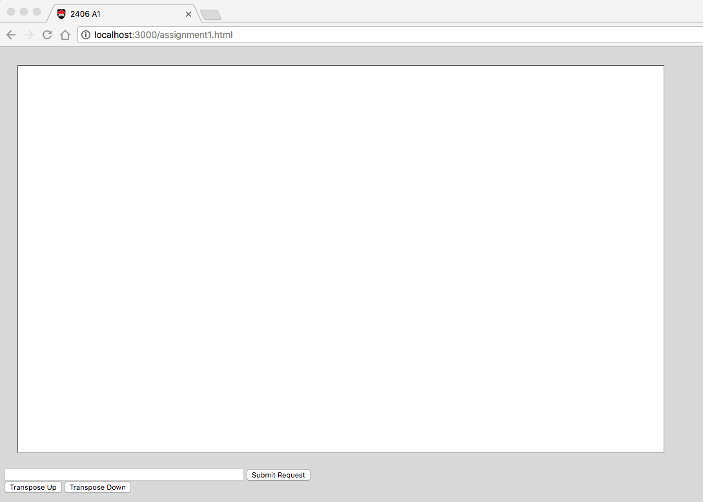
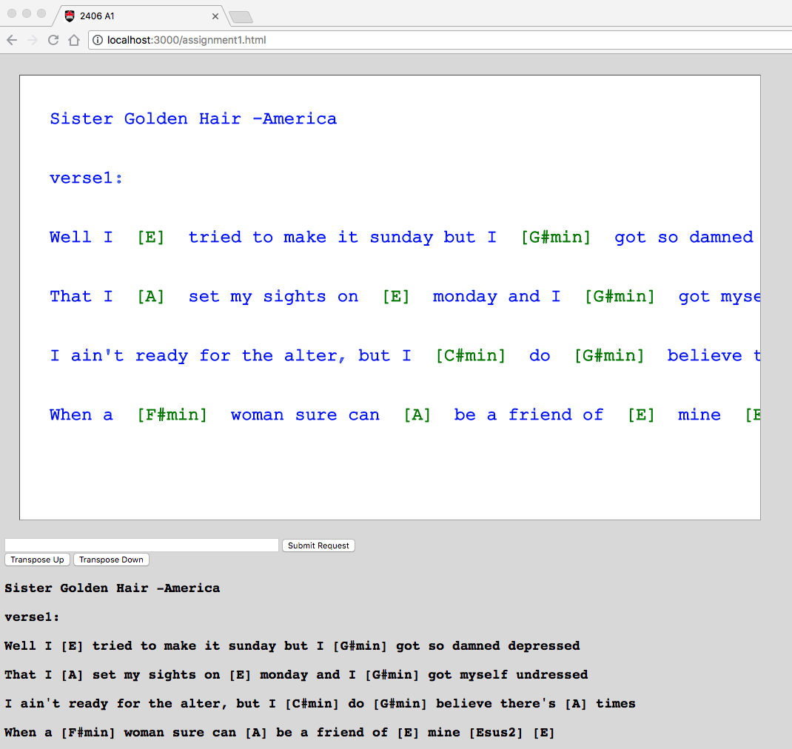

COMP 2406 Fall 2018
Assignment #1:
Javascript Single Page App -Part I
Due Thu. Oct. 4 by 10:00pm in culearn
Assignment Revisions and Corrections will be noted here.
Node.js/Javascript based Single Page App
In this assignment you are going build part I of a small single-page web app that is based on just the native capabilties of Node.js and javascript. Specifically you will build an app that allows a user to open a chord pro formatted (chords and lyrics) text file hosted on a node.js server and then within their browser drag the words and chord symbols around. Also you will allow the user to transpose the chords up or down to a different musical key.
This assignment is based on the contents of tutorials 01 and 02. It is not a particularly difficult assignment but it will be challenging just because a lot of the material is new to you (by the end of the course this will seem more like just a tutorial exercise).
The components are:
Server: Built with just Node.js and its built-in modules (e.g. http, path, fs, url) and whatever javascript you want to write. (We are not allowing extra npm modules yet in this assignment; only what is built into node.js itself.)
Client: Browser that is provided with a web page from the server consisting of html, css, javascript and jquery. You can use which ever of these your want.
Assignment Restrictions:
Technology Restrictions: Because each layer of node.js/javascipt-based technologies, like npm modules or the express.js framework, solves many problems you encounter, in this assignment we will not allow their use yet. In later assignments we will bring these in and focus on new challenges. So pay attention to the technology restrictions in the various assignments in the course.
Assignments may be done in pairs: If you want to work with a partner you can. Please only submit one copy to culearn with both your names on it. (In the past we have had pairs who each thought the other member would submit and so nothing got submitted and both got zero.)
Marking: This assignment is based on 13 design requirements numbered R1.1...R4.2 for a total of 26 marks.
Marks are awarded, or deducted, based on requirements as follows:
| Req Type | Marking |
|---|---|
| R0.x | Assignment gets 0 if any critical submission |
| R0.x | You lose 2 marks for each good practice |
| R0.x | You earn 2 marks for each design requirement (green) satisfied and well implemented; 1 mark if it's partly met or met but not well implemented; and 0 if it's not met. |
Submission and Good Programming Practice Requirements
The following requirements pertain to all your assignments regardless of what your application is supposed to do (i.e. regardless of the design requirements). These requirements are to ensure that your code is usable, readable, and maintainable.
R0.0 UNIQUENESS REQUIREMENT. The solution and code you submit MUST be unique. That is, it cannot be a copy of, or be too similar to, someone else's code, or other code found elsewhere. You are, however, free to use any code posted on our course website as part of our assignment solution. [Assigment mark =0 if this requirement is not met.]
R0.1 CODE SUBMISSION ORGANIZATION AND COMPILATION: You should submit all the code files and data files necessary to compile and run your app. The TA's will execute your app with node app.js command unless alternative instructions are provided in the README.txt file. If you compress your submission to culearn you must use only .zip format (not .rar or .tar or whatever). Though you are permitted to write code on Windows, Linux, or Mac OS the code should be generic enough to be OS agnostic. Your code must work with at least a current Chrome browser. [Assigment mark =0 if this requirement is not met.]
R0.2 README FILE: Your submission MUST include a README.txt file telling the TA how to setup and run your app. The TA should not have to look into your code to figure out how to start up your app. Your README.txt MUST contain the following:
-
Your name, student number and email address and if you are working with a partner then their name, student number and email address as well.
-
Version: node.js version number and OS you tested on your code on.
Install: how to install needed code. This will likely look like
npm installornpm install module_name-
Launch: Instructions on how to launch your app. e.g.
node myserver.js. As the course progresses there will be more launch options to it's important to provide instructions. -
Testing: Provide Instructions on what the TA should do to run your app. e.g. visit http://localhost:3000/mytest.html?name=Louis. If your app requires a userid/password to run then provide one for the TA to use. Your server should print to the console the URL's that should be visited by the browser to demonstrate your app. List them in the order you want us to visit them:

-
Issues: List any issues that you want the marker to be aware of. In particular, tell us what requirements you did not implement or that you know are not working correctly in the submitted code. Here you are giving us your own assessment of your app.
Pay attention to any specific URL's that must be supported by your app. [Assigment mark =0 if this requirement is not met.]
R0.3 VARIABLE AND FUNCTION NAMES: All of your variables and functions should have meaningful names that reflect their purpose. Don't follow the convention common in math courses where they say things like: "let x be the number of customers and let y be the number of products...". Instead call your variables numberOfCustomers or numberOfProducts. Your program should not have any variables called "x" unless there is a good reason for them to be called "x". (One exception: It's OK to call simple for-loop counters i,j and k etc. when the context is clear and VERY localized.) Remember javascript variables don't have types which can help clarify things so choosing good names is even more important. Many functions in javascript are annonymous (have no name) and so the name of the variable that refers to them is even more important. [Minus 5 marks from assignment if this requirement is not met.]
R0.4 COMMENTS: Comments in your code must coincide with what the code actually does. It is a very common bug to modify code and forget to modify the comments and so you end up with comments that say one thing and code that actually does another. By the way, try not to over-comment your code but instead choose good variable names and function names that make the code more self commenting. Don't be afraid to create local variables so that the variable name provides more clarity. [Minus 5 marks from assignment if this requirement is not met.]
R0.5 CITATION REQUIREMENT: If you use code from other sources you should cite the source in comments that appear with the code. If the source is an internet website then put the URL in the comments. You may use bits of code from outside sources but this may not form the complete solution you are handing in.You DON'T have to cite demo code we provide on the course web site or with tutorials and assignments, however that code should not be used for things you post publicly (like on GitHub). [Minus 5 marks from assignment if this requirement is not met.]
VERY IMPORTANT: Any sample code fragments provided may have bugs (although none are put there intentionally). You must be prepared to find errors in the requirements and sample code. Please report errors so they can be fixed and an assignment revision posted.
Application Design Requirements
Background
In tutorial 02 you will have done an exercise with node.js to open and read arrays of words from a server (as JSON strings) and placed them on an HTML5 canvas and allowed the user to move them around with their mouse. (Review tutorial 02 if necessary.) For this assignment we want to serve the client the contents of chord-pro formated text files stored on the server. Below is an example of such a file. The file format represents the lyrics of songs with chord symbols embedded within the lyrics. The chord symbols appear in the [] brackets. This format is convenient because the chords always stay in the correct relative position with the lyrics because they are imbedded within the lyrics.
Chord Pro Text File:
Sister Golden Hair -America verse1: Well i [E] tried to make it sunday but i [G#min] got so damned depressed That i [A] set my sights on [E] monday and i [G#min] got myself undressed I ain't ready for the alter, but i [C#min] do [G#min] believe there's [A] times When a [F#min] woman sure can [A] be a friend of [E] mine [Esus2] [E] verse2: Well i [E] keep on thinkin bout you sister [G#min] golden hair surprise That i just can't live without you can't you [G#min] see it in my eyes I've been [A] one poor corre[F#min]spondent, i've been [C#min] too too [G#min] hard to [A] find But it [F#min] doesn't mean you [A] ain't been on my [E] mind [Esus2] [E] chorus: Will you [B] meet me in the middle will you [A] meet me in the [E] end Will you [B] love me just a little just en[A]ough to show you [E] care Well i [F#min] tried to fake it i [G#min] don't mind sayin i [A] just can't make it repeat intro, then verse 2, then chorus, then they do this doo-wop thing that uses the chorus (B - A - E) thing
We want you to build a client-server single page app so that the lyrics (words) and chords are displayed in a browser web page. Moreover, once displayed, the user should be able to drag individual words or chord symbols around with their mouse and transpose the music to another key.
This is intended to be a single page app (where the user just makes one request to a particular URL) and is based on the HTML5 canvas app from tutorial 02.
To do this assignment you need to be able to do things like the following (much of it based on tutorial 02 and lecture demos):
Open and read files on the server.
Send JSON objects from server to browser in response to a request.
Convert javascript objects to JSON strings and vice versa.
Send HTTP GET or POST requests from client to server and extract the response data.
Receive HTTP GET or POST requests from the client and formulate a response.
Send the HTML and javascript representing the app to the browser.
The challenge will be to combine the capablities from the tutorials and class demo code to form the application and also solve a few additional problems that inevitably fall through the cracks. You are free to make use of any code we post on the course website as part of your assignment solution.
1) Server-Side Requirements
R1.1 The server code should use only javascript and node.js with build-in modules (not use any external npm modules or the express.js framework).
R1.2 The server should have a directory of chord pro formated text files (use .crd or .txt extension as you prefer). So the server DOES NOT store data in an intermediate format like JSON strings -it stores data as chord-pro text files.
R1.3 The server should allow a client, via a browser, to request a particular song (based on song title).
R1.4 Server should be hosted on port 3000 and reachable from a browser on the same machine visiting http://localhost:3000/assignment1.html (Your ReadMe.txt file should still tell the TA what specific URL to use to test your application.)
2) Client-Server Data Exchange
R2.1 The server should send the html representing the app when the user visits http://localhost:3000/assignment1.html
R2.2 Once the app is lauched the exchange of chord/lyric data between client and server should be in the form of JSON strings.
3) Song Display Requirements
(Note: see the mockup video after the requirements are discussed below.)
R3.1 The client webpage should have an HTML5 canvas area, a text input, a "Submit Request", button a "Transpose Up" button and a "Transpose Down" button and may look something like the following:

R3.2 The client should be able to request a song from the server by typing the song title in the text field and clicking the "Submit Request" button. If the song is available on the server the downloaded song should be displayed for the client as shown below.

R3.3 The lyrics and chords shown on the canvas should be in the chord-pro format with the chords in a different colour than the lyrics. Also the chords and words should be drag-able. That is, the user should be able to drag the individual words or chords to new positions on the canvas with their mouse. Moreover, the user should be able to drag from anywhere in the word not just from the front of the word. [Note for this assignment there is nothing that needs to happen because the user dragged the words or chords around; the user just has to be able to do it.]
R3.4 The original chord pro text downloaded from the server should be shown as individual html paragraph lines below the canvas. (This should be done by having the client-side javascript add <p> elements to the current web page -as was done in tutorial 02.)
R3.5 If the client requests a song from the server that does not exist the canvas should appear blank and there should be no paragraph<p> content below it. (That is, the UI should be blank but the code should not crash because the song was not on the server.)
Transposition Requirements
Musicians often need to transpose the chords of a song to another key. That is, transpose the chords up or down by a certain number of semi-tones (or half-steps). You will implement this feature using the Transpose buttons on the user interface.
R4.1 If the user presses the "Transpose Up" button the chords should be transposed up one semitone (or half-step) as they say in music. That is, an Am7 chord should be become A#m7 (or Bbm7), F#7 should become G7, Ebmin should become Emin etc. (see below for more explanation of what chord transposition means.). The html paragraph shown below the canvas should NOT transpose; it should just show the original chords and lyrics as downloaded.
R4.2 If the user presses the "Transpose Down" button the chords should be transposed down one semitone (or half-step) as they say in music. That is, an Am7 chord should be become Abm7 (or G#m7), F#7 should become F7, Ebmin should become Dmin etc. (see below for more explanation of what chord transposition means.) The html paragraph shown below the canvas should NOT transpose; it should just show the original chords and lyrics as downloaded.
Here is an explanation of how chords are transposed.
In western music there are 12 notes whose names are A, A# or Bb, B, C, C# or Db, D, D# or Eb, E, F, F# or Gb, G, G# or Ab. Moving from one note to the next one is called a distance of a semitone (or a half-step). It's perhaps easiest to visualize these as a table.
| 0 | 1 | 2 | 3 | 4 | 5 | 6 | 7 | 8 | 9 | 10 | 11 |
|---|---|---|---|---|---|---|---|---|---|---|---|
| A | A# | B | C | C# | D | D# | E | F | F# | G | G# |
| A | Bb | B | C | Db | D | Eb | E | F | Gb | G | Ab |
Seven of the notes have simple letter names (A,B,C,D,E,F, or G) and five of the notes have two names: a sharp (#) or flat (b) name (A#=Bb, C#=Db, D#=Eb, F#=Gb, G#=Ab).
To transpose a chord Dm7 up 4 semitones you would locate the chord's root name D in the table at index 5 and then look up the new root name at location 5 + 4 = 9. That is, Dm7 transposed up 4 semitones is F#m7. (If you end up going off the table you would wrap around to the start -i.e. do a mod 12 operation on the index sum.)
To transpose a chord Dbmaj down 6 semitones you would locate Db which is at index 4 then subtract 6 which would be -2 or 10 if we are wrapping around. Thus Dbmaj transposed down 6 semitones would be Gmaj.
Thus transposing up is moving to the right by the required number of semitones wrapping around if necessary. Transposing down is moving to the left by the required number of semitones wrapping around if necessary.
Demonstration Video
Here is a short screen capture mockup video of how the app might behave:
Additional Notes.
We've simplified the three test song files provided so they only consist of one verse or chorus of text. That is sufficient for the assignment -you don't need to use long files of entire songs.
You can use .txt extensions instead of .crd for you test files. This makes them easier to view with other apps or the browser.
I've added some chord-pro txt files in a songs directory with this assignment that you can use to test with. You can easily generate chord pro files on the http://www.chordie.com/ website. On this site you can create a songbook and add songs. When you select songs in your songbook there is an option to edit them which will show you the raw chord pro format which you can cut and paste to a text file. The following website also has a lot of chord pro files available: http://getsome.org/guitar/olga/chordpro/